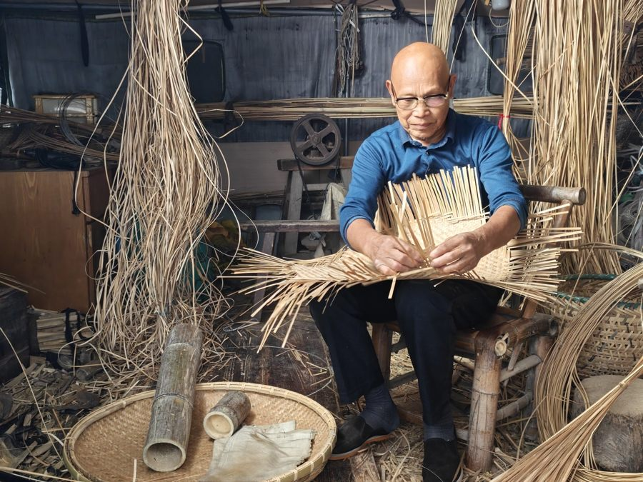

Deep Dive
图文分点详解

01
选竹与劈篾 · 一切从一根竹子开始
道明竹编多选用当地慈竹，要求竹节长、竹肉厚、无虫蛀。匠人先将竹筒剖成竹条，再层层剖薄、劈成细篾，最细的竹丝可细至0.1毫米，"细如发丝、柔可绕指"是道明竹编的招牌功夫。
- 慈竹为料：纤维细密、韧性极佳
- 分层剖篾：一根竹可剖出十余层篾片
- 青篾与黄篾：青篾坚韧用于骨架，黄篾柔软用于编织

02
编织技法 · 十字、六角与穿丝
道明竹编的编织方法丰富多样：十字编、六角编、螺旋编、穿丝编、弹花编、抽丝编等。不同技法产生不同的纹理与强度，匠人凭经验选择最合适的编法。
- 十字编：最基础也最结实，常见于箩筐
- 六角编：孔洞成六边形，透气轻盈
- 穿丝编：竹丝穿插成花纹，装饰性极强
03
器物之美 · 从生活到艺术
竹编最初服务于农耕生活：竹筐、竹篮、竹席、竹扇。如今道明竹编已走向艺术与设计：竹编灯具、竹编屏风、竹编装置艺术，甚至与时尚品牌联名，让千年技艺走进当代空间。
- 生活器物：竹篮、竹筐、竹席、竹扇
- 艺术陈设：竹灯、竹屏、竹编雕塑
- 跨界联名：与国际品牌合作，登上时装周
04
体验指南 · 去道明村看竹编
崇州道明镇竹艺村是体验竹编的最佳去处：竹林掩映的村落里，既有非遗工坊、竹编博物馆，也有被竹编包裹的网红建筑「竹里」。可现场观看匠人编织，也可报名体验课亲手编一件小物。
- 地址：成都崇州市道明镇竹艺村，距市区约1小时车程
- 体验：竹编体验课约1-2小时，可完成小竹篮或竹铃
- 提示：竹编怕潮怕暴晒，日常用软布擦拭即可